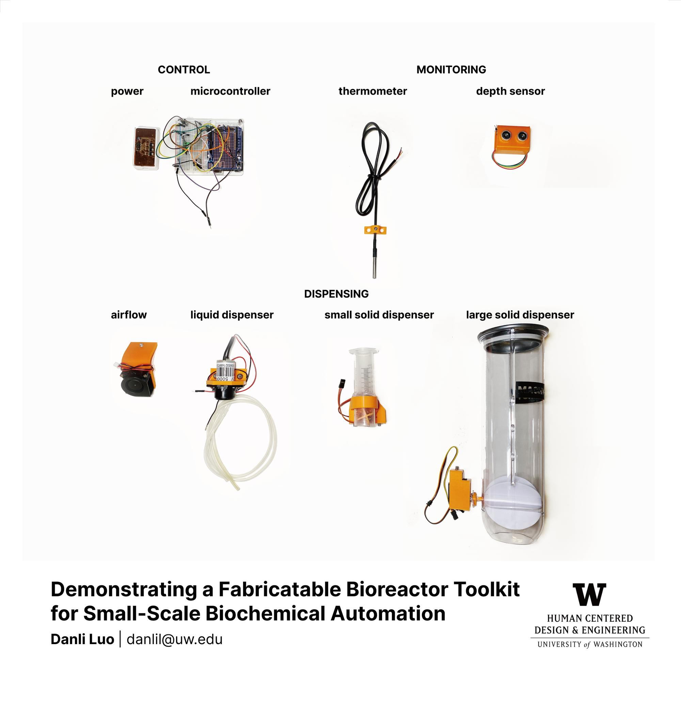

Biological and chemical engineering creates novel materials through custom workflows. Supporting such materials development through systems research such as toolkits and software is increasingly of interest to HCI. Bioreactors are widely used systems which can grow materials, converting feedstock into valuable products through fermentation. However, integrated bioreactors are difficult to design and program. We present a modular toolkit for developing custom bioreactors. Our toolkit contains custom hardware and software for adding chemicals, monitoring the mixture, and refining outputs. We demonstrate our bioreactor toolkit with a beer brewing application, an automated process which involves several biochemical reactions that are comparable to other synthetic biology processes.

@inproceedings{luo2022demonstrating,
title={Demonstrating a Fabricatable Bioreactor Toolkit for Small-Scale Biochemical Automation},
author={Luo, Danli and Peek, Nadya},
booktitle={Adjunct Proceedings of the 35th Annual ACM Symposium on User Interface Software and Technology},
pages={1--3},
year={2022}
}